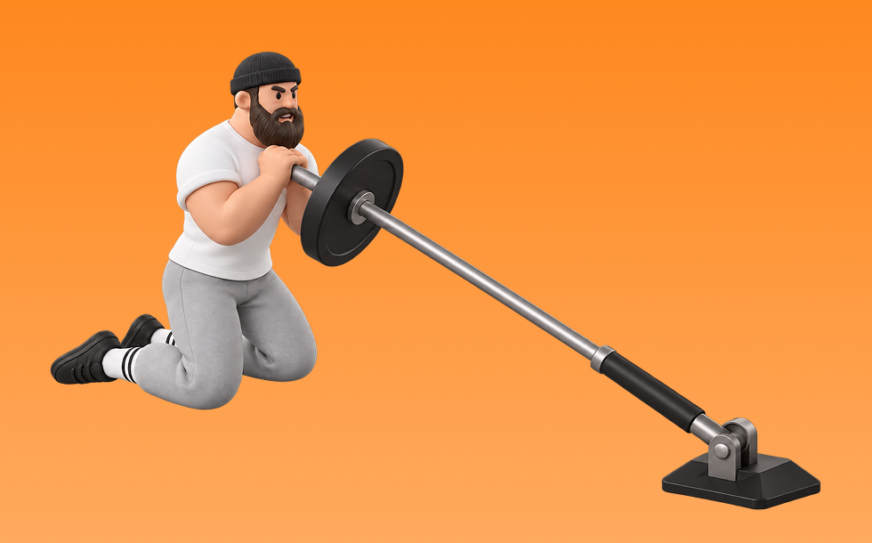

ランドマインプレス

ランドマインプレスとは、器具を使って「押す」動作で肩（三角筋）、腕（上腕三頭筋）を鍛える種目です。狙った部位に意識を向けやすいのが特徴で、反動を抑えてコントロールしながら反復します。肩の厚みづくりとオーバーヘッドの押す力の向上が期待できます。
- 対象部位
- 肩
- 器具
- バーベル
- 記録形式
- 重量・回数
- 別名
- ランマイプレス
YouTube動画
-
【野球上達】球速アップのためのトレーニング、ランドマインプレス
-
【 ランドマイン 】下半身から上半身にパワーを効率良く伝える練習方法【 ランドマイン で連動性を鍛える】
-
【投手必見！】球速アップトレーニング！「ランドマインプレスのご紹介！」（※野球練習＆野球トレーニングの紹介動画）
-
筋肉倉庫でトレーニング_胸筋上部(ランドマインプレス編)
-
【 ランドマイン 】カラダの連動性を高めるための効果的な ランドマイン トレーニング の解説【 ランドマイン プレス 】【 ランドマイン トレーニング 】
-
ランドマインプレスで大胸筋上部を鍛える
-
ランドマインフロアプレスで鍛える
-
大胸筋の筋肥大に最も良い種目は？【胸のティアリスト】
-
ランドマインクリーンで身体機能強化
-
【胸トレ】大胸筋にメチャメチャ効かせられる最強ダンベル種目を紹介します!
-
背中のトレーニングランドマインロー
-
【筋トレ】肩の鍛え方【8種目】
YouTubeショート
-
上半身のパワー#アストレ #部活 #ランドマイン
-
ランドマインプレス（Landmine Press SP Position）
-
トレーナーが1分解説「SQ-1アームランドマインプレス」の正しいやり方とコツ【下半身/バーベル】
-
トレーナーが1分解説「SQ-1アームランドマインプレス」の正しいやり方とコツ【下半身/バーベル】#Shorts
-
This Landmine Press Tutorial Is GOLD!🤩
-
富山凌雅：ランドマインプレス
-
【 筋トレ動画 】ランドマインプレス #筋トレ #ランドマインプレス #肩トレ #肩メロン #shorts
-
ジムでベンチプレス100kg以下の人を見た常連の反応 #shorts
-
正しいショルダープレス4つのポイント #筋トレ
-
横川君から学ぶ背中トレ
-
パンチ力を上げるトレーニング！ #鈴木千裕 #rizin
-
パンチ力・体幹強化トレーニング#筋トレ #格闘技 #fitness #workout #mma #rizin #ランドマイン
-
インクラインダンベルアームカールで、極太の腕を手に入れよう💪 #インクラインベンチプレス #筋トレ #フィジーク
-
全身の筋肉を"大きく強く"するための5つの種目！#shorts #筋トレ #トレーニング
-
ミリタリープレス 110キロ
-
【今すぐやめろ】大胸筋の成長が一瞬で止まるインクラインベンチプレス(科学的胸トレ) #shorts
-
背中を最大限に鍛える種目3選【筋トレ】
-
トレーナーが1分解説「SQ-ランドマンプレス」の正しいやり方とコツ【全身/バーベル】
-
【誰でもメロン肩になれる方法がこれ】#Shorts
-
アスリートにオススメしないトレーニング#アストレ #shorts
-
マシンを使ったショルダープレスのコツ
-
腹筋Lv.100の男【世界の筋肉】
-
The landmine press is a great way to use the barbell #menshealthmuscle
-
井上尚弥の高校時代のトレーニングがヤバい#格闘技 #ボクシング #井上尚弥 #shorts
-
朝倉未来ストーリー90kgデッドリフト
-
トレーナーが1分解説「SQ-ランドマンプレス」の正しいやり方とコツ【全身/バーベル】#Shorts
-
1Aランドマインクリーンジャーク
-
チマエフが最も重視するトレーニング #ufc #mma #格闘技
-
【危険】これを知らずにトレーニングしてるとランニングに繋がらない！？走るために必要な筋肉は◯◯が意外と重要だった #ランニング#マラソン#トレーニング#shorts
-
最大ストレッチと収縮はケーブル一択
-
サッカーに筋トレは必要か
-
HOW TO LANDMINE PRESS! Build strong shoulders & core stability!
-
【球速アップ】遊び感覚で身体操作UP！投手がやるべき身体操作種目
-
【球速アップ】大谷翔平選手のメディシンボール投げと草野球人の比較#大谷翔平
-
Landmine ランドマイン 地雷 35KG
動作方法
- 安定した姿勢を作り、肩と体幹を固定する
- 狙う部位を意識して、反動を使わずに押す
- 可動域を保ちながら、ゆっくり元に戻す
動作ポイント
- 肩をすくめない
- 手首を寝かせすぎない
- 反動を使いすぎない
ワンポイントアドバイス
- 重量よりも肩の軌道を安定させる
- 首まわりの力みを減らして行う
目的別回数設定
目的や体力に応じた一般的な目安です。無理のない範囲で調整してください。
- 筋力アップ
- 1〜5回
- 筋肥大
- 6〜12回
- 持久力アップ
- 13〜20回
YouTube動画について
動画はYouTubeの公開情報をもとに表示しています。内容は投稿者によるもので、Biggrによる監修ではありません。
アプリを入手
筋トレやトレーニングの記録はBiggrにお任せください。今すぐ無料で使い始められます。